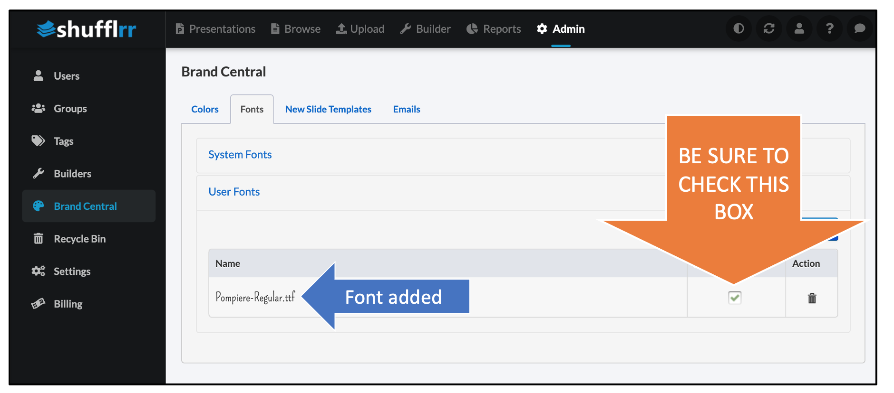
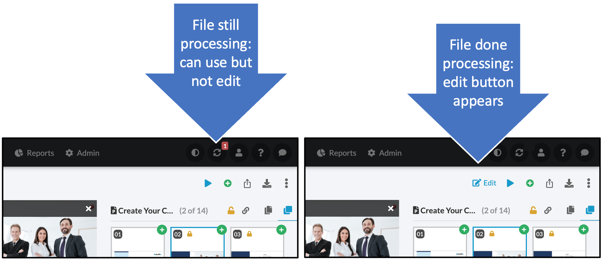

Troubleshooting
1. Font issues
If you are experiencing font issues, first make sure that your admin has enabled your desired font.
Check the Admin > Brand Central > Fonts page for more details. Frequently, font issues are caused by failing to do the last step: checking the box to make a font available.

2. Complex graphics
Extremely complex graphics, such as grouped animations or grouped Smart Art, may have trouble rendering correctly particularly in the editor.
For example, a map of the fifty United States as fifty separate objects grouped together with a single gradient and shadow across all of theme (instead of a gradient within each state) is an example of a graphic that did not render properly in Shufflrr.
· Grouped Animations
Grouped animations may fail.
Suggestion: Make a video of the animated objects and embed the video instead of the separate objects.
· Grouped Objects
Grouped objects, particularly complex objects, may cause failures.
Suggestion: Use a screenshot to make an image of the grouped objects, or, get them just how you want them and then ungroup them.
· SmartArt
Microsoft SmartArt may cause failures.
Suggestion: Use a screenshot to make an image of the SmartArt, and use the image.
· Gradients, shadows, and opacity
Complex gradients, shadows, and lowered opacity may cause failures.
Suggestion: Use a screenshot to make a flat image, and use that in place of the manipulated images.
3. Unsupported File Types
Supported file types are: .pptx, .ppsx, .docx, .pdf .xlsx, .jpg, .png, .bmp, .gif, .mp4, .avi, .wmv, .mov. Some additional file types can be stored but not used. If you need to store an unsupported file in Shufflrr so that people can access it, but it isn't uploading in the current file format, try zipping it into a .zip file and uploading that.
Some unsupported file formats, when used in presentations (such as TIFFs), will break the editing function.
Suggestion: Using supported file formats is recommended.
What is going on when presentations are processing?
When a slide or other material is processing, the following activities are in progress:
- First, Shufflrr makes an image (thumbnail) of each slide, in several sizes.
- Thumbnails are used throughout the application, such as in search and the slide tray, to allow multiple slides to be seen at the same time.
- Thumbnails allow slides to be selected, dragged, and rearranged while giving a clear view of what is on the slide.
- Second, Shufflrr processes the slide content.
- Processing for search
- Text is pulled from each page of materials, including speaker notes and including all supported file types, and stored for searching.
- Tags and other data about the slide are also stored for searching.
- Storing text and attributes allows a fast search to find any text on any slide.
- Processing for editing
- Every piece of every slide is processed for editing. The slide is the stage and each piece of information is an actor.
- Fonts
- Images
- Shapes
- Backgrounds
- Colors
- This allows the user to edit on each of these types of objects and attributes.
- Every piece of every slide is processed for editing. The slide is the stage and each piece of information is an actor.
- Processing for search
What to expect
File processing takes a few minutes when a file is added or saved. Here's how to track that:
- You will see arrows going in a circle at the top right of the screen with a little number showing the number of processes currently happening.

- Click that icon to see the status of your files.
- Each process described above will show on separate lines.

- When the first process is finished, you will be able to see the deck in the left navigation and click on it.
- You will be able to move or delete slides at this point, but not edit slides until the second process has finished.
- When slides are ready, a blue "Edit" button will appear. Click it to modify the slides.
